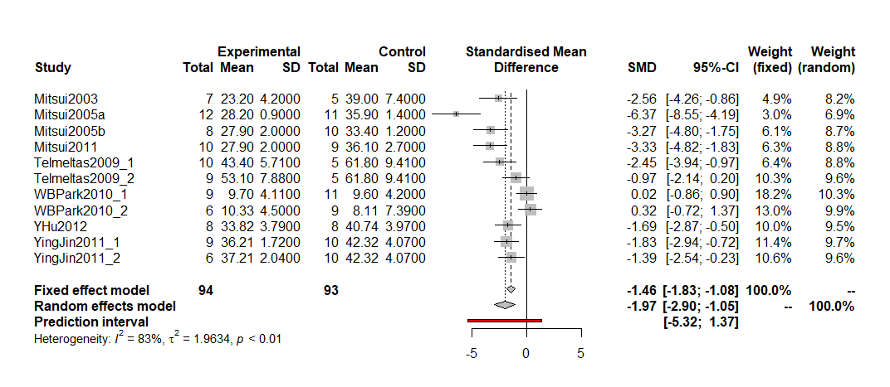
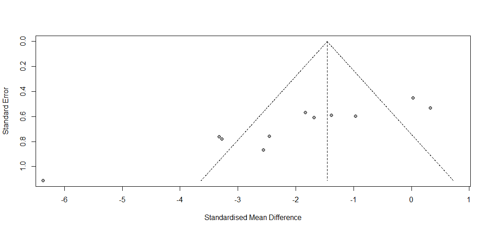
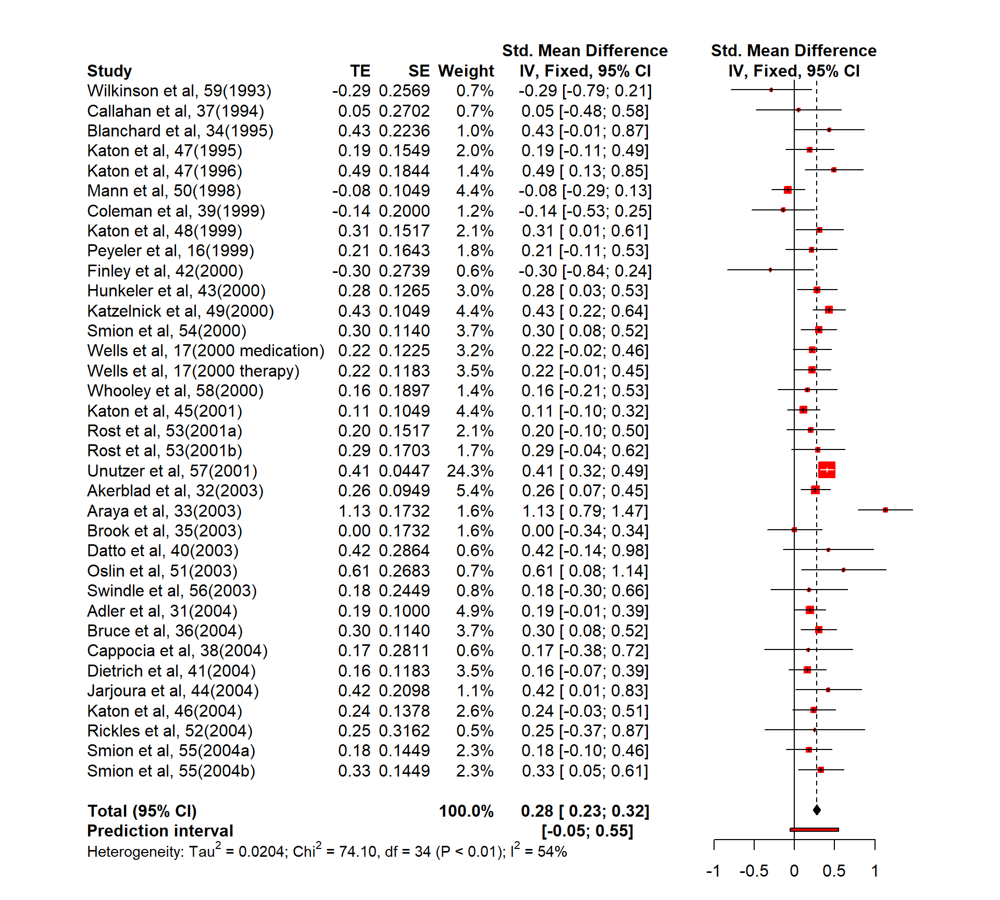

Chapter 5 출판 비뚤림 분석
다른 연구와 마찬가지로 메타분석에서도 여러가지 비뚤림(bias)이 존재하며, 그 유형으로는 언어적 비뚤림(language bias), 접근성 비뚤림(availability bias), 친숙도 비뚤림(familiarity bias), 결과보고 비뚤림(outcome-reporting bias), 비용 비뚤림(cost bais) 등이 있다.
| 비뚤림 유형 | 내용 |
|---|---|
| 언어적 비뚤림 | 영어로 출간된 연구 결과를 선별적으로 포함시켜서 발생하는 비뚤림 |
| 접근성 비뚤림 | 연구자가 접근하기 쉬운 연구 결과를 선별적으로 포함시키는 비뚤림 |
| 친숙도 비뚤림 | 자신의 학문 분야의 연구 결과만을 선별적으로 포함시키는 비뚤림 |
| 결과보고 비뚤림 | 연구자가 연구 결과를 선별적으로 보고하는 경우, 즉 일반적으로 통계적으로 유의한 연구 결과는 그렇지 않은 연구 결과보다 더 잘 보고되는 경향이 있으므로 발생하는 비뚤림 |
| 비용 비뚤림 | 무료 또는 저비용으로 이용 가능한 연구를 선별적으로 포함하는 경우에 생기는 비뚤림 |
- 연구에 포함된 연구가 전체 연구(the population of completed studies)를 대표하지 못하는 비뚤림. 즉 비대표성(unrepresentativeness)과 관련되어 있다. 따라서 이 모든 비뚤림을 보통 배포 비뚤림(dissemination bias)이라는 포괄적 용어로 지칭하기도 한다. 하지만 이와 유사한 용어로 출판 비뚤림(publication bias)이라는 용어가 이미 학계에 정착되어 있다. 한편 코크란(Cochrane)에서는 이를 보고 비뚤림(reporting bias)이라고 부르기도 한다.
5.1 출판 비뚤림의 의미
출판 비뚤림은 일반적으로 연구 결과의 속성이나 방향에 따라 연구 결과가 출판되거나 출판 되지 못하는 비뚤림을 의미한다. 하지만 메타분석에서 출판 비뚤림을 논할 때는 Copas & Shi(2000)가 언급한 출판(publication)의 의미 즉, 메타분석에 포함될 연구를 선정하는 전체 과정(the whole process of selecting a study)을 의미한다.
메타분석에 포함된 연구로부터 나타난 분석 결과가 분석에 포함되어야 할 연구들이 모두 포함되었을 때 나타나는 분석 결과와 체계적으로 다르다면 출판 비뚤림이 존재한다고 할 수 있다. 즉, 출판된 연구의 결과가 모든(수행된) 연구의 결과를 대표하지 못할 때 출판 비뚤림이 발생하는 것이다. 따라서 메타분석에 포함된 연구가 관련된 모든 연구들의 왜곡된 표본(biased sample)이라면, 그 결과(즉 메타분석의 결과로) 나타난 전체효과크기는 왜곡된 – 일반적으로 과대추정(overestimated)된 – 결과라고 할 수 있다.
문헌에는 출판된 문헌뿐만 아니라 출판되지 않은 회색문헌(grey literature)도 존재하는데 이는 기술 보고서(technical reports), 정부 보고서(governmental reports), 학위논문(thesis/dissertation), 회의자료(conference papers) 등과 같은 것이다. 만약 이러한 회색문헌이 메타분석에 포함되지 않았다면 메타분석은 표본추출 비뚤림(sampling bias)으로부터 자유로울 수 없다. 또한 긍정적인 결과를 보여주는, 그리고 통계적으로 유의미한 결과를 보여주는 연구는 그렇지 않은 연구보다 출판될 가능성이 높으므로 출판된 연구는 메타분석에 포함될 가능성이 높다. 따라서 통계적으로 유의하지 않거나 긍정적인 결과를 도출하지 못한 연구는 출판되지 않아서 메타분석에 포함되지 않을 가능성이 높으므로 이는 누락된 연구(missing studies)로 나타난다.
메타분석에 있어서 표본크기(sample size)가 작은 연구들이 상대적으로 큰 효과크기를 보이는 경향을 small-study effects라고 한다. 통계적 유의성에 상관없이 표본이 큰 연구들은 출판될 가능성이 높고, 표본이 중간 크기인 경우 출판되지 않을 가능성이 있다. 또한 표본이 작은 연구들은 출판되지 않을 가능성(missing)이 가장 높지만 효과크기가 크다면 출판될 가능성이 있다. 즉, 메타분석에 포함된 연구 중 표본크기가 작은 연구는 효과크기가 상대적으로 큰 연구일 가능성이 높다고 할 수 있다. 따라서 ’small-study effects’에 대한 이러한 가설을 검정하기 위해 표본크기와 효과크기의 관계를 고찰할 필요가 있다. 만약 이 양자 간에 어떤 의미 있는 관계가 존재한다면 표본크기가 작은 연구로 인한 영향에 대한 가설은 사실(true)이라고 볼 수 있다. 즉, 메타분석에 포함된 연구들 중에서 표본크기가 작은 연구들의 효과크기가 상대적으로 크다면, 이것은 samll-study effects, 출판 비뚤림이 존재한다는 근거로 볼 수 있다.
5.2 출판 비뚤림의 분석 과정
출판 비뚤림에 대한 분석 과정은 다음과 같다.
- 데이터에 대해 검토한다.
- 비뚤림이 있는지 그 근거를 확인한다.
- 비뚤림이 미치는 영향을 고려한다.
일반적으로 출판 비뚤림에 대한 분석 목표는 다음 중 한가지로 볼 수 있다.
1. 비뚤림의 영향력(the impact of bias)이 미미하다.
2 비뚤림의 영향력이 미미하지는 않지만 결과에 영향을 줄 정도는 아니다.
3. 비뚤림이 심각해서 연구 결과가 의심스럽다.5.2.1 자료에 대한 검토(forest plot 이용)
출판 비뚤림이 존재하는지 살펴보는 가장 좋은 출발점은 메타분석의 결과를 검토해보는 것으로, forest plot을 살펴보는 것이 좋다. Forest plot은 개별 연구 결과와 전체 결과를 동시에 보여준다. 즉 각 개별연구들의 결과(효과크기 및 통계적 유의성)와 패턴, 그리고 전체 연구 결과의 양상(평균효과크기 및 통계적 유의성)을 보여준다. 아래 Forest plot을 살펴보면 가중값이 작은 연구들 즉 표본의 크기가 작은 연구들이 대체로 효과크기가 큰 것으로 나타남을 알 수 있다. 즉 ‘small-study effects’ 가능성이 있는 것으로 볼 수 있다.

5.2.2 ‘small-study effects’ 존재 유무에 대한 확인(funnel plot 이용)
메타분석에서 표본의 크기와 효과크기의 관계를 보여주기 위해 funnel plot을 이용한다. 깔대기 모양을 하고 있다고 해서 funnel plot이라 부르며, 수평축에는 효과크기, 수직축에는 표준오차(standard error)로 구성된다. 일반적으로 표본이 큰 연구들은 그래프의 상단에 위치하며, 가운데 직선 즉 평균효과크기 주변에 몰려있다. 하지만 표본크기가 작은 연구들은 표과크기와 표준오차가 더 크기 때문에 그래프의 하단에 위치하며 상대적으로 폭넓게 분포되어 있다. Funnel plot의 대각선은 각 효과크기의 95% 신뢰구간을 나타낸다. 만약, 출판 비뚤림이 없다면 즉, small-study effects가 존재하지 않는다면 funnel plot은 평균을 중심으로 좌우대칭(symmetry)의 모습을 보이게 되며, 반면에 비대칭(asymmetry)의 모습을 보인다면 출판 비뚤림이 있음(biased)을 보여주는 것이다. 비대칭을 파악하는 데는 시각적으로 확인하는 방법과 통계적으로 검증하는 방법 두 가지가 있다.

Funnel plot은 효과크기의 분포가 비대칭임을 쉽게 보여주지만, 시각적 분석은 주관적 판단에 의존하기 때문에 엄격한 방법이 될 수 없으므로 비대칭에 대한 통계적 분석으로 Egger’s regression test를 이용한다. Egger 방법은 각 연구의 효과크기와 표준오차와의 관계를 회귀식으로 설명하며, 효과크기와 표준오차는 관계가 없다는 귀무가설(bias=0 즉, no small-study effects)을 통해 통계적 유의성을 살펴본다. Funnel plot의 비대칭을 검증하기 위한 또 다른 방법으로 Begg & Mazumdar (1994)의 rank correlation test를 이용하기도 한다. 하지만 이 방법은 효과크기와 분산과의 서열상관관계를 검증하기 때문에 Egger의 regression test보다 검증력이 약한 것으로 알려져 있다.
5.3 비뚤림이 결과에 미치는 영향
만약 비뚤림(bias)이 있는 것으로 밝혀졌다면 그 비뚤림은 전체 연구 결과에 어느 정도 영향을 주는가를 밝혀야 한다. 이를 위해 일반적으로 trim-and-fill 방법을 사용하며 과정은 다음과 같다.
1. Trim: funnel plot에서 먼저 좌유대칭이 되도록 대칭이 되지 않는 연구들을 제외한다.
2. 대칭이 되지 않은 연구들을 제외시킨 후 평균을 다시 구한다.
3. Fill: 새로운 평균을 중심으로 하여 제외된 연구들을 복원시킨 후, 이 복원된 연구들과 대칭이 되도록 누락되었다고 생각하는 연구들을 새롭게 채운다. 메타분석에서는 항상 출판 비뚤림에 대한 분석을 하는 것이 중요하다. 이는 메타분석의 결과가 신빙성이 있는 것인지 아니면 의심스러운지 독자들이 판단할 수 있는 중요한 근거를 제공한다. 따라서 출판 비뚤림 분석은 개별 메타분석 연구뿐만 아니라 메타분석이라는 연구 방법과 연구분야 자체의 진실성(integrity)을 위한 기준이 된다.
5.4 간접흡연과 폐암과의 관계 예제
Hackshaw et al., (1997)는 간접흡연과 폐암과의 관계에 대한 메타분석을 실시하였으며, 그 결과 흡연 배우자를 둔 비흡연 배우자의 간접흡연으로 인한 폐암 발생률이 \(24\%\) 더 높은 것으로 보고하였다. 그러나 효과가 큰 연구들은 작은 연구들에 비해 출판 될 가능성이 높고 따라서 연구에 포함되었겠지만, 효과크기가 작거나 효과가 없는 연구들은 출판될 가능성이 낮아서 연구에 포함되지 못했기 때문에 이러한 결과가 도출되었다는 의견이 제기되었다. 그래서 이러한 이의에 대한 검정이 필요하다.
5.4.0.1 자료 입력 및 분석
publi <- read.table(text='
study yi lower upper vi
study_1 -0.288 -0.84084 0.265475 0.079649
study_2 0.728 -0.20691 1.662006 0.227305
study_3 0.756 0.171673 1.340567 0.088916
study_4 -0.223 -1.08347 0.637175 0.192668
study_5 -0.236 -1.3769 0.905448 0.338993
study_6 0.698 0.084369 0.311897 0.09806
study_7 0.207 -0.21131 0.625334 0.045553
study_8 0.182 -0.76119 1.125838 0.231731
study_9 0.419 -0.1344 0.971824 0.079637
study_10 0.03 -0.88426 0.943388 0.217377
study_11 0.438 -0.10545 0.981966 0.076952
study_12 0.03 -0.49453 0.553638 0.071497
study_13 0.85 -0.20996 1.910264 0.292543
study_14 0.501 0.147782 0.853768 0.032435
study_15 0.174 -0.19933 0.547231 0.036271
study_16 0.419 -0.9461 1.782026 0.483819
study_17 0.77 0.080455 1.459759 0.123808
study_18 0.077 -0.44558 0.599512 0.071079
study_19 0.936 -0.30067 2.17861 0.398166
study_20 0.482 -0.10432 1.069173 0.089616
study_21 0.058 -0.30163 0.418171 0.033717
study_22 -0.236 -0.48464 0.013193 0.016128
study_23 -0.301 -1.13317 0.530963 0.180221
study_24 0.82 -0.28397 1.92353 0.317124
study_25 -0.03 -0.25 0.189074 0.012546
study_26 0.47 -0.19086 1.13087 0.113687
study_27 0.174 -0.41186 0.759763 0.089331
study_28 0.507 -0.31538 1.32902 0.175972
study_29 0.231 0.034836 0.42739 0.010028
study_30 0.095 -0.48017 0.670789 0.086208
study_31 0.507 0.115443 0.898192 0.039872
study_32 0.148 -0.22551 0.522347 0.06397
study_33 0.104 -0.40075 0.609472 0.066414
study_34 0.166 -0.10305 0.434078 0.018775
study_35 0.372 0.015283 0.727838 0.033042
study_36 0.703 -0.73741 2.143606 0.540157
study_37 0.182 -0.11094 0.475588 0.022388
', header=T)
publi## study yi lower upper vi
## 1 study_1 -0.288 -0.840840 0.265475 0.079649
## 2 study_2 0.728 -0.206910 1.662006 0.227305
## 3 study_3 0.756 0.171673 1.340567 0.088916
## 4 study_4 -0.223 -1.083470 0.637175 0.192668
## 5 study_5 -0.236 -1.376900 0.905448 0.338993
## 6 study_6 0.698 0.084369 0.311897 0.098060
## 7 study_7 0.207 -0.211310 0.625334 0.045553
## 8 study_8 0.182 -0.761190 1.125838 0.231731
## 9 study_9 0.419 -0.134400 0.971824 0.079637
## 10 study_10 0.030 -0.884260 0.943388 0.217377
## 11 study_11 0.438 -0.105450 0.981966 0.076952
## 12 study_12 0.030 -0.494530 0.553638 0.071497
## 13 study_13 0.850 -0.209960 1.910264 0.292543
## 14 study_14 0.501 0.147782 0.853768 0.032435
## 15 study_15 0.174 -0.199330 0.547231 0.036271
## 16 study_16 0.419 -0.946100 1.782026 0.483819
## 17 study_17 0.770 0.080455 1.459759 0.123808
## 18 study_18 0.077 -0.445580 0.599512 0.071079
## 19 study_19 0.936 -0.300670 2.178610 0.398166
## 20 study_20 0.482 -0.104320 1.069173 0.089616
## 21 study_21 0.058 -0.301630 0.418171 0.033717
## 22 study_22 -0.236 -0.484640 0.013193 0.016128
## 23 study_23 -0.301 -1.133170 0.530963 0.180221
## 24 study_24 0.820 -0.283970 1.923530 0.317124
## 25 study_25 -0.030 -0.250000 0.189074 0.012546
## 26 study_26 0.470 -0.190860 1.130870 0.113687
## 27 study_27 0.174 -0.411860 0.759763 0.089331
## 28 study_28 0.507 -0.315380 1.329020 0.175972
## 29 study_29 0.231 0.034836 0.427390 0.010028
## 30 study_30 0.095 -0.480170 0.670789 0.086208
## 31 study_31 0.507 0.115443 0.898192 0.039872
## 32 study_32 0.148 -0.225510 0.522347 0.063970
## 33 study_33 0.104 -0.400750 0.609472 0.066414
## 34 study_34 0.166 -0.103050 0.434078 0.018775
## 35 study_35 0.372 0.015283 0.727838 0.033042
## 36 study_36 0.703 -0.737410 2.143606 0.540157
## 37 study_37 0.182 -0.110940 0.475588 0.022388## Warning: 패키지 'meta'는 R 버전 4.1.3에서 작성되었습니다## Loading 'meta' package (version 5.2-0).
## Type 'help(meta)' for a brief overview.
## Readers of 'Meta-Analysis with R (Use R!)' should install
## older version of 'meta' package: https://tinyurl.com/dt4y5drsfit<- metagen(yi,sqrt(vi),
data = publi[order(publi$vi),],
studlab = paste(study),
comb.fixed = TRUE,
comb.random = FALSE,
prediction = TRUE,
sm = "RR")## Warning: Use argument 'fixed' instead of 'comb.fixed' (deprecated).## Warning: Use argument 'random' instead of 'comb.random' (deprecated).fit## Number of studies combined: k = 37
##
## RR 95%-CI z p-value
## Common effect model 1.2048 [1.1199; 1.2962] 5.00 < 0.0001
## Prediction interval [0.9032; 1.7181]
##
## Quantifying heterogeneity:
## tau^2 = 0.0226 [0.0000; 0.0663]; tau = 0.1504 [0.0000; 0.2575]
## I^2 = 24.2% [0.0%; 49.8%]; H = 1.15 [1.00; 1.41]
##
## Test of heterogeneity:
## Q d.f. p-value
## 47.49 36 0.0952
##
## Details on meta-analytical method:
## - Inverse variance method
## - Restricted maximum-likelihood estimator for tau^2
## - Q-profile method for confidence interval of tau^2 and tau5.4.0.2 Forest plot을 이용한 데이터 검토
비뚤림이 존재하는지 살펴보는 가장 좋은 출발점은 forest plot으로 메타분석 결과를 검토해보는 것이다. 여기서는 ’small-study effects’가 존재하는지 살펴보기 위해 자료를 분산 크기순으로 정렬하여 분석하였다(publi[order(publi$vi),]).
forest(fit)
각 개별연구들의 결과(효과크기 및 통계적 유의성)와 패턴, 그리고 전체 연구 결과의 모습(평균효과크기 및 통계적 유의성)을 보여준다. 그림의 아래쪽에 있는 가중치가 작은 연구들 즉, 표본의 크기가 작은 연구들이 대체로 효과크기가 큰 것으로 나타났음을 알 수 있으며, 이는 ’small-study effects’가 존재할 가능성이 있음을 시사한다.
5.4.0.3 Funnel plot을 이용한 ‘small-study effects’ 존재 유무 확인
Funnel plot은 meta package에서 funnel 함수를 이용하여 출력한다. 이때 funnel 함수의 첫번째 인수는 메타분석 결과를 담은 object를 사용한다.
funnel(fit,comb.fixed=T, comb.random=F)
\(X\)축에는 효과크기, \(Y\)축에는 표준오차를 사용하여 표본크기가 작은 연구들이 그래프 하단에 보다 폭넓게 위치할 수 있다. 그리고 relative risk=1.0을 기준으로 볼때 주로 오른쪽에 위치하고 있어 비대칭(asymmetry)임을 육안으로 비교적 쉽게 확인할 수 있다. 하지만 funnel plot은 오류에 대한 증명이 아니라 비뚤림의 가능성(possibility of bias)을 제기하기 위한 도구이며, ’small-study effects’를 검토하기 위한 하나의 일반적인 수단(generic means)이라고 보는 것이 타당하다.
5.4.0.4 비대칭에 대한 통계적 분석
Funnel plot을 통해 효과크기의 분포가 비대칭음을 쉽게 알 수 있지만, 시각적 분석은 주관적 판단에 의존하기 때문에 엄격한 방법이 될 수 없으므로 보다 과학적인 통계적 분석이 필요하다. 이때 일반적으로 활용되는 방법이 Egger’s regression test가 있으며 metabias 함수를 이용한다.
metabias(fit, method.bias="linreg")## Linear regression test of funnel plot asymmetry
##
## Test result: t = 2.35, df = 35, p-value = 0.0248
##
## Sample estimates:
## bias se.bias intercept se.intercept
## 0.8824 0.3762 0.0101 0.0853
##
## Details:
## - multiplicative residual heterogeneity variance (tau^2 = 1.1727)
## - predictor: standard error
## - weight: inverse variance
## - reference: Egger et al. (1997), BMJEgger et al., (1997)는 각 연구의 효과크기와 표준오차와의 관계를 회귀식으로 설명하고 있으며, 위의 결과는 bias의 \(p-value\)가 0.0248로 유의수준 \(5\%\)에서 유의함을 알 수 있다. 즉 효과크기와 표준오차는 관계가 없다는 귀무가설(bias=0, no small-study effects)을 기각하게 되어 효과크기와 표준오차의 관계는 통계적으로 유의미한 관계가 있다고 말할 수 있다. 즉, 전반적으로 표본의 크기가 작은 연구들은 큰 연구들보다 간접흡연과 폐암 사이의 관계 곧 효과크기가 크다는 것을 보여주고 있기 때문에 통계적으로도 funnel plot의 비대칭을 증명하게 된다.
Funnel plot의 비대칭성을 검증하기 위한 또 다른 방법으로 Begg & Mazumdar (1994)의 rank correlation test를 이용할 수 있다. 이 방법은 효과크기와 분산과의 서열상관관계를 검증하기 때문에 Egger의 regression test보다 검증력이 약한 것으로 평가되어 널리 사용되지는 않는다. 이 방법 역시 metabias 함수를 이용하여 사용할 수 있다.
metabias(fit, method.bias="rank")## Rank correlation test of funnel plot asymmetry
##
## Test result: z = 1.23, p-value = 0.2189
##
## Sample estimates:
## ks se.ks
## 94.0000 76.4591
##
## - reference: Begg & Mazumdar (1993), Biometrics